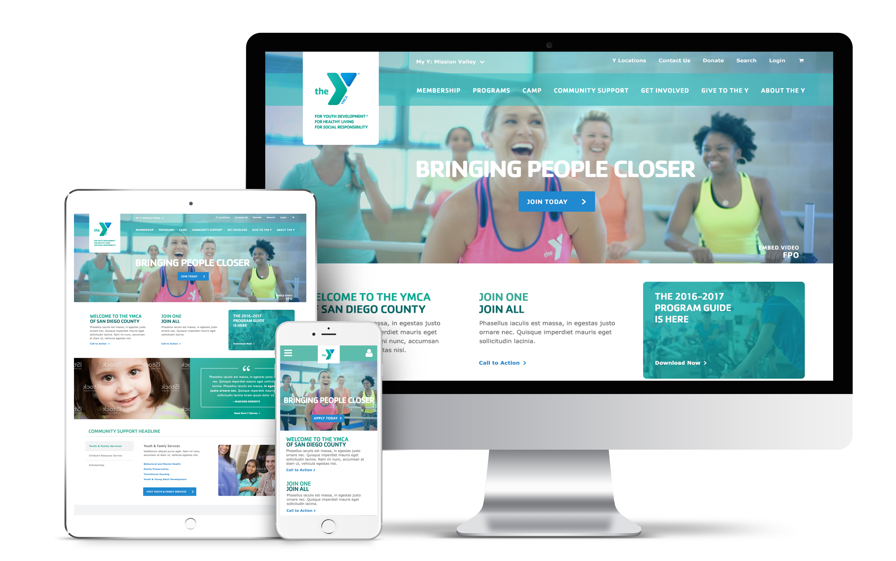
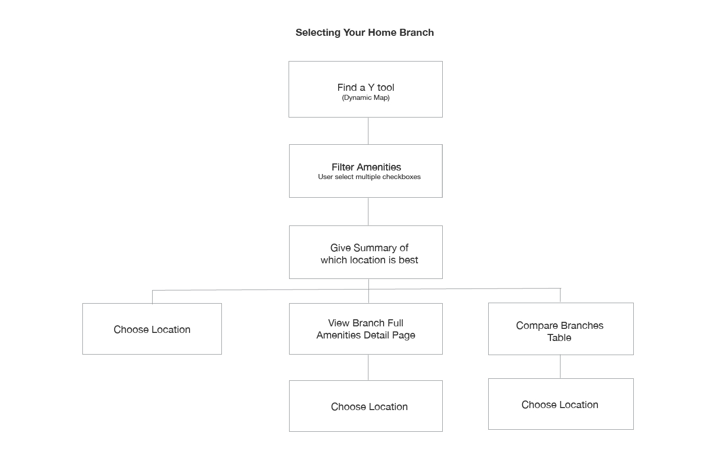
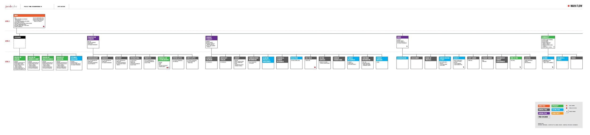
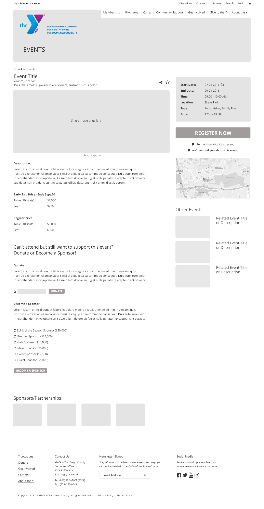
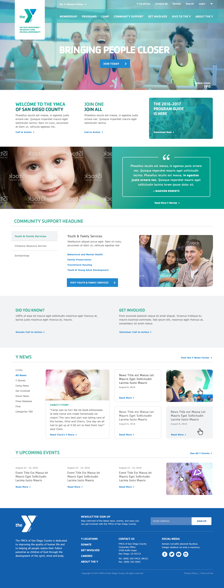

San Diego YMCA proudly offers state-of-the-art fitness equipment, group exercise classes, free child watch, and programs for all ages.

The YMCA of San Diego County has tasked Jacob Tyler Agency with enhancing its website by creating an impactful, relevant and attractive online presence so that they may continue their path for success, credibility and new opportunities for expansion and profit. Jacob Tyler Agency will create an online experience which allows all Y locations to work together in unison, keeping the brand and experience consistent across the San Diego system to support the “Join One, Join All” membership benefits.
The first step in the process was to create User Flows. It’s important to think about the objectives that users are trying to accomplish when they land on the website. This will help us design an experience that fulfills multiple user objectives that lead to successful interactions. Not all website visitors are alike, so we had to prioritize the flows and focus our efforts on a few that would have the most impact. We reached that decision through performing an exercise with the client during a discovery meeting. The client receives a lot of feedback from Y members each year, so they were able to share such pain points. Along with their business objectives in mind, we decided to focus on these flows:
We examined how these 4 scenarios currently flowed on the website, and looked for ways in which it could be improved. With the advent of technology, we now live in a instant gratification society. The evolution of consumer products have always seen iterations in which a user could complete a task faster and more efficiently. If we can help users complete an objective in 2 clicks versus 5 clicks, then we should do so.

Next, we created an information architecture (IA). This was actually a beast to tackle due to the enormous size of their website. Performing a detailed audit and analysis of the existing content was no easy task. They had at least 2,000 webpages because it had just accumulated over the years with individual pages being created each time they had new information instead of being added to an existing page. This certainly posed a challenge as we had to figure out what was the best way to present this deliverable. We couldn’t follow standard conventions where it would look like a family tree. In the image below, we attempted to do so but it would be too large of a document if we kept expanding the branches. We tried to experiment with software such as Balsamiq, Axure, and Adobe XD. Nothing currently on the market seemed to fulfill our needs so we ended up putting everything on a Google spreadsheet. We were able to cut them down to about 300 pages which is a significant trim.
This was the most challenging stage in the process for me because not only did I have to decide which pages to keep, but I also had to figure out how to rearrange each page in relation to one another. The navigation and content had to be organized in a clear and consistent way. Dealing with content is messy, complicated, and painful. But the web is comprised of content, and deserves our time and attention.

This was not originally a deliverable for the client. But after completing the Information Architecture, we thought it was necessary to create a document that actually describes the specific goals, content, and functionality for each webpage. We didn’t do this for every single page but only focused on the sections related to the 4 User Flows. This document was more of a resource for our internal team, and even more so to the developers. Not only do the developers have to know that the “Join Now” page would live under the “Membership” tab in the navigation which is outlined in the IA, they also have know the features and functionalities that need to be built for that page.
Now onto my favorite part! We created desktop and mobile wireframes in Photoshop to visually outline how each webpage would look. Instead of wire framing every single page since that would burn too many hours, we created templates. For example, a Childcare Resource Service landing page could structurally use the same template as the Youth and Family Services landing page. Although those two have different content, the template could still fulfill both of their needs. Before I moved to Photoshop, I like to sketch everything with pen, paper, and whiteboard first. This way, I was able to discuss my thoughts with other designers before “committing” to Photoshop. Also, I conducted a Competitive Analysis for my own benefit. This wasn’t a required deliverable but I felt it was necessary to see what other YMCA websites were doing. Why reinvent the wheel? It also helps give me inspiration when I look to other websites and examine what I liked and disliked.
I was actually quite surprised to find out that we were using this method. Creating wireframes in Photoshop takes a lot of work although it does save a lot of time during the design phase. In design, all we had to do was replace each gray box with an actual image or change the font/colors. I still prefer Rapid Prototyping in which one would use software such as Balsamiq, Axure, or UXPin because it allows for someone to create wireframes quickly and make more iterations. I believe that this makes it easier to do user research because many software have interactive wire framing so one can easily observe how users interact with your wireframes.
Fortunately, we did transfer these Photoshop files to Invision so at least they had the option of being interactive. I also would’ve liked to incorporate more formal User Research for this project and presented this option to the team, but due to budgetary constraints we were unable to do so. It makes me uneasy whenever I design without user data because I don’t like to assume how users will interact with a website. All I could really do was follow best website practices (namely Nielson’s 10 Heuristics) and bug my friends for their feedback.

The final step in our UX Approach were the designs. YMCA already has a brand guideline which outlined the acceptable fonts, colors, amongst other things. So designs were created with those in mind. Our Creative Director stepped in and played a major role during this process because photography was a major element to the designs. Quite frankly, their current Photography selections weren’t that great. So our Creative Director led our team in figuring out which stock photos to buy and which we would need to do in a Photoshoot. I volunteered to be a part of their photoshoot as a model and it was a lot of fun! I had to do zumba, barre, and yoga while smiling the entire time and trying not to sweat too much. It’s harder than it looks!

This is still a work in Progress. Website and Mobile App are set to launch in Early 2017.